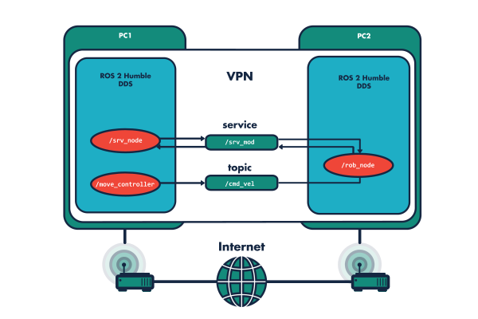

ROS 2 Basics¶
ROS 2, the latest release of ROS, is a set of software libraries and tools (middleware) that help in the development of robotic applications. By definition, middleware is software that connects software components. It is a layer that sits between the operating system and applications on both sides of a distributed computer network. ROS 2 uses permissive, open-source Apache 2.0 licensing.

Since its release in 2007, ROS has undergone incremental updates, meaning no fundamental changes but continuous major improvements. In 2017, the robotics community realized that the original 2007 concept had fundamental limitations that could not be fixed incrementally. Thus, Noetic Ninjemis (supported until 2025) is the last release of ROS 1, and ROS 2 was developed in parallel. This also means that previous source codes are harder to port to the new version, but in return, we get many new features, improvements, and support for developing robots and vehicles.
As a result, ROS 2 has transitioned from the world of academic research to industrial use. Interestingly, NASA's VIPER lunar rover also runs ROS 2. Additionally, automotive giants like Bosch, BMW, and Volvo use it. Many other robotics companies also use it. Links: www.nasa.gov/viper/lunar-operations, rosindustrial.org/ric/current-members, www.bosch.com/stories/bringing-robotics-middleware-onto-tiny-microcontrollers. ROS users worldwide: metrorobots.com/rosmap.html.

Image source: Robot Operating System 2: Design, Architecture, and Uses In The Wild: Steve Macenski et al.
Why Use a Framework for My Robotics Project?¶
For our first robotics project, we might choose to develop entirely on our own without a framework. This has its advantages (learning, execution speed, etc.). But soon, we will need an algorithm that others have implemented, but it is not compatible with the original concept. At this point, it is worth considering using a framework (e.g., ROS 2). Note that ROS 2 is not the only option; there are many similar, smaller frameworks: Player, YARP, Orocos, CARMEN, Orca, MOOS, and Microsoft Robotics Studio. Each has its advantages, but in this course, we focus on ROS 2 due to its support.

Image source: ros.org/blog/ecosystem
- Plumbing: ROS primarily provides a messaging system, often referred to as "middleware" or "plumbing". Communication is one of the first needs that arise when implementing a new robotics application or any software system that connects to hardware. ROS's built-in and well-tested messaging system saves time by handling communication details between decentralized nodes, so you don't have to implement it separately. Moreover, intra-process communication allows direct memory access on a single machine.
- Tools: Effective application development requires good development tools. ROS has such tools, including debugging (
rqt_console), visualization (Rviz2,Foxglove Studio), plotting (rqt_plot,Foxglove Studio), logging (mcap), and playback. - Capabilities: Whether it's a GPS device driver, walking and balance controller for a quadruped robot, or a mapping system for a mobile robot, ROS has solutions. From drivers to algorithms to user interfaces, ROS provides the building blocks that allow you to focus on your application.
- Community: ROS is backed by a large, global, and diverse community. From students and hobbyists to multinational corporations and government agencies, people and organizations from all segments drive the
ROS 2project. This is important because many questions will arise during development. Most of these have already been answered by the community, and they are happy to answer new questions.
The following diagram illustrates the nodes (programs) and topics (~communication) of a simple line-following robot:
graph TD;
camd([/cam_driver]):::red --> im1[ /image1<br/>sensor_msgs/Image]:::light
im1 --> li1([ /line_detect_node]):::red
im1 --> st1([ /stop_detect_node]):::red
li1 --> li2[ /line<br/>example_msgs/Line]:::light
st1 --> st2[ /stop<br/>example_msgs/Stop]:::light
li2 --> nav([ /line_detect_node]):::red
st2 --> nav
nav --> cmd[ /cmd_vel<br/>geometry_msgs/Twist]:::light
cmd --> control([ /robot_control]):::red
n1([ /node]):::white -- publishes --> t[ /topic<br/>msg_type]:::white
t -- subscribes --> n2([ /node]):::white
classDef light fill:#34aec5,stroke:#152742,stroke-width:2px,color:#152742
classDef dark fill:#152742,stroke:#34aec5,stroke-width:2px,color:#34aec5
classDef white fill:#ffffff,stroke:#152742,stroke-width:2px,color:#152742
classDef red fill:#ef4638,stroke:#152742,stroke-width:2px,color:#fffLet's look at another example that creates maps from speed data, IMU, and distance data.
graph LR;
odom[ /odom<br/>nav_msgs/Odometry]:::light --> slam([ /slam_node]):::red
speed[ /speed<br/>geometry_msgs/Twist]:::light --> slam
imu[ /imu<br/>sensor_msgs/Imu]:::light --> slam
scan[ /scan<br/>sensor_msgs/PointCloud2]:::light --> slam
n1([ /node]):::white -- publishes --> t[ /topic<br/>msg_type]:::white
slam --> pose[ /global_pose<br/>geometry_msgs/Pose]:::light
slam --> map_g[ /map_grid<br/>nav_msgs/OccupancyGrid]:::light
slam --> map_p[ /map_points<br/>sensor_msgs/PointCloud2]:::light
t -- subscribes --> n2([ /node]):::white
classDef light fill:#34aec5,stroke:#152742,stroke-width:2px,color:#152742
classDef dark fill:#152742,stroke:#34aec5,stroke-width:2px,color:#34aec5
classDef white fill:#ffffff,stroke:#152742,stroke-width:2px,color:#152742
classDef red fill:#ef4638,stroke:#152742,stroke-width:2px,color:#fffROS 2 Directory Structure¶
~/ros2_ws$ ls
build install log src
graph TD;
W1{{ Workspace</br>pl. ros2_ws }}:::light --> S1{{ Source space</br>src }}:::white
W1 --> B1{{ Build space</br>build }}:::white
W1 --> I1{{ Install space</br>install }}:::white
W1 --> L1{{ Log space</br>log }}:::white
S1 --> P1{{ package1 }}:::white
S1 --> P2{{ package2 }}:::white
S1 --> P3{{ bundle_packages }}:::white
P1 --> LA1{{ launch }}:::white
P1 --> SR1{{ src }}:::white
P2 --> LA2{{ launch }}:::white
P2 --> SR2{{ src }}:::white
classDef light fill:#34aec5,stroke:#152742,stroke-width:2px,color:#152742
classDef dark fill:#152742,stroke:#34aec5,stroke-width:2px,color:#34aec5
classDef white fill:#ffffff,stroke:#152742,stroke-width:2px,color:#152742
classDef red fill:#ef4638,stroke:#152742,stroke-width:2px,color:#fffgraph TD;
W2{{ other_ws }}:::light --> S2{{ src }}:::white
W2 --> B2{{ build }}:::white
W2 --> I2{{ install }}:::white
W2 --> L2{{ log }}:::white
classDef light fill:#34aec5,stroke:#152742,stroke-width:2px,color:#152742
classDef dark fill:#152742,stroke:#34aec5,stroke-width:2px,color:#34aec5
classDef white fill:#ffffff,stroke:#152742,stroke-width:2px,color:#152742
classDef red fill:#ef4638,stroke:#152742,stroke-width:2px,color:#fff~/ros2_ws/
├──build
├──install
├──log
└──src/
├── bundle_packages
│ ├── cone_detection_lidar
│ │ ├── launch
│ │ └── src
│ ├── my_vehicle_bringup
│ │ └── launch
│ ├── other bundle package1
│ ├── other bundle package2
│ └── img
└── wayp_plan_tools
├── csv
├── launch
└── src
Differences between ROS 1 and ROS 2¶
- Changes in Middleware
ROS 1uses a Master-Slave architecture and XML-RPC middleware. In contrast,ROS 2uses the Data Distribution Service (DDS), which provides greater efficiency and reliability, low latency, scalability, and configurable Quality of Service (QoS) parameters. Among other things, this means there is no need to startroscore. XML-RPC is better for simple remote procedure calls, while the added complexity of DDS allows it to better support real-time systems. -
Changes in the ROS API
ROS 1has two separate libraries:roscppfor C++ androspyfor Python. These are not entirely identical in terms of functionality. In contrast,ROS 2has a core library written in C -rcl(ROS client library) - on which other libraries are built. This ensures that core functionalities are available sooner across different APIs. This is one of the main reasons whyROS 2can provide support for more languages beyond the previous Python and C++: for example, rclada Ada, rclcpp C++, rclgo Go, rclpy Python, rcljava Java, rclnodejs Node.js, rclobjc Objective C (iOS), rclc C, ros2_rust Rust, ros2_dotnet .NET, ros2cs ros2_dotnet alternative in C#. -
Changes in Data Format
ROS 2uses theMCAPformat, which is not specifically ROS's own format but an open-source container file format for multimodal log data. It supports timestamped, pre-ordered data and is ideal for use in pub/sub or robotics applications. More information: mcap.dev
Some Useful Innovations¶
- Real-Time Processing
The summary of the above features, along with the use of DDS, makesROS 2highly suitable for real-time processing, especially when deterministic, low-latency communication is required. - QoS: Quality of Service
ROS 2allows the configuration of data flow, which affects how data is sent and received. This includes settings for message reliability, deadlines, and priorities, ensuring that critical messages are delivered on time. - Multithreaded Execution
ROS 2supports truly parallel execution of multiple nodes, making much better use of modern multi-core processors compared toROS 1.
 Source: husarnet.com/blog/ros2-docker
Other Changes¶
- Catkin has been replaced by Ament (Colcon) as the build system. Overlays allow the creation of a secondary workspace that does not affect the primary workspace - this is useful when experimenting with new packages without affecting the base configuration (called "underlay").
ROS 2is not backward compatible withROS 1. Consequently,ROS 1packages are unlikely to work withROS 2and would require reworking, and other software you used withROS 1will no longer work.ROS 1was primarily designed for Ubuntu.ROS 2runs on MacOS, Windows, Ubuntu, and other (even Real-Time) operating systems.
Versions¶
gantt
dateFormat YY-MM
title ROS 2 Distros
excludes weekends
tickInterval 365days
%% (`excludes` accepts specific dates in YYYY-MM-DD format, days of the week ("sunday") or "weekends", but not the word "weekdays".)
axisFormat %y
section ROS 2
Jazzy :active, r012, 2024-05-23, 5y
. :active, r011, 2021-01-01, 0d %% placeholder
Iron :active, r010, 2023-11-01, 188d
. :active, r011, 2021-01-01, 0d %% placeholder
Humble :active, r009, 2022-05-23, 5y
. :active, r011, 2021-01-01, 0d %% placeholder
Galactic:active, r008, 2021-05-23, 1y
Percentage distribution of distros over time: metrics.ros.org/rosdistro_rosdistro.html
The Humble Hawksbill or simply Humble is a long term support (LTS) release, supported for 5 years (from May 2022 to May 2027).
Additional releases: docs.ros.org/en/humble/Releases.html